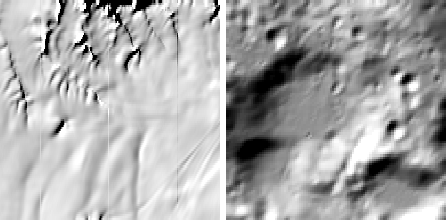
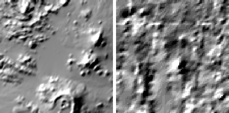
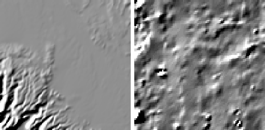
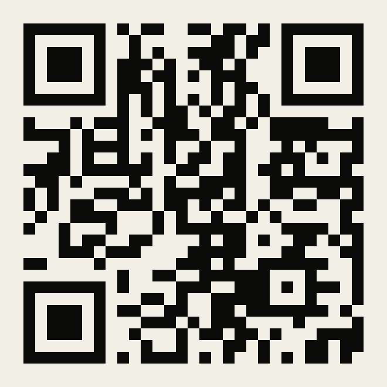

NASA Space Apps Challenge 2026 · Análogos terrestres de la Luna y Marte
01 · Método
Toda la tierra emergida, con datos abiertos de la NASA y sus agencias socias. El relieve se mide a 400 m por píxel.
Lo que la Tierra no puede imitar
01 · Método
Cada celda frente a 1.345 sitios de la Luna y Marte: regiones de Artemis III, pozos lunares, cuevas y lugares de aterrizaje de rovers.
Un vector con una nota de 0 a 1 para cada característica: terreno, aridez, frío, roca, polvo…
Los pesos dependen de la misión: polo sur lunar, cuevas y tubos de lava, o astrobiología en Marte.
200 sorteos de pesos. Solo cuenta lo que sigue arriba en la mayoría: la elección de pesos no sesga el resultado.
02 · Validación y novedad
Análogos que ya usan las agencias · percentil
Con las cuevas de OpenStreetMap: el 78 % de los tubos de lava confirmados cae en el 5 % superior del mapa.
Artículos que ya los citan como análogo · OpenAlex
03 · Resultados
Luna · polo sur
Antártida · 83,6° S · 51,0° O

Relieve del sitio ↔ gemelo: Slater Plain (Luna)Cuevas y tubos de lava
Eritrea · 13,5° N · 41,7° E

Relieve del sitio ↔ gemelo: cueva CC0783 (Marte)Marte · astrobiología
Argelia · 26,8° N · 6,2° E

Relieve del sitio ↔ gemelo: Utopia Planitia (Marte)El límite
Desde el espacio no sabemos qué cuevas tienen interés científico y cuáles no. Alguien tiene que ir.
Demostración
Pruébala tú
Escanea el código con la cámara del móvil.
cristsm.github.io/MoonSiteUA
MoonSiteUA